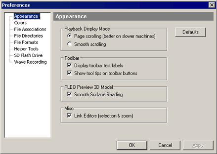
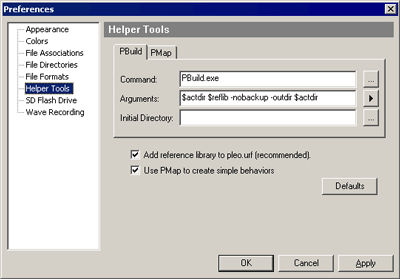
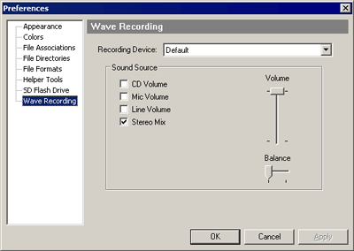

9.0 Setting Preferences
To change the various preferences, from Edit Menu,
select "Preferences".

9.1 Appearance
- Playback
Display Mode. Affects how the editors update during simulated
playback. Smooth scrolling looks
better if you have enough CPU behind it. People with an LCD
display, or a slow CPU, might find page scrolling looks better.
- Toolbar Text Labels. If you don't like
descriptive toolbar labels, turn them off here.
- Toolbar Tool Tips. If you don't like the
pop-up tip messages (giving longer descriptions), turn them off here.
- PLEO Preview 3D Model. Affects the OpenGL
motion editor preview & PLEO window, and controls rendering detail
& shading. If you are having problems with the preview, try
turning off shading & see if it helps.
- Link Editors. The motion/sound
editors selection bars & zooms will be linked, making editing
easier.
9.2 Colors
You can change the colors of most areas of the
editors. The marker colors, highlights, background colors,
motion data, wave data, etc...
Other
colors such as toolbar background & frame & window color are
specified by Windows (from the Windows Display Properties Dialog).
PLEO preview colors aren't change here.
Right-click on the preview, and select "Colors" from the pop-up menu.
9.3 File Associations
File associations configure Windows. If you
enable a file type, then double-clicking in Windows Explorer opens
that file in MySkit.
- PLEO Workbooks (*.pleo)
- PLEO Motion Files (*.umf)
- PLEO Sound Files (*.usf)
- Wave Sound File (*.wav)
You
might need to right-click Wave files from Windows Explorer, and
choose "Edit" from the pop-up menu, even after associating MySkit
with
those file types (the pop-up menu "Play" option is usually default in
Windows).
9.4 File Directories
MySkit maintains three directory paths: Action,
Motion, and Sound. By default,
the Motion & Sound directories are relative to the action
file. ie:
.\Motion\
.\Sound\
If you prefer storing everything in one file instead,
use PLEO Workbooks (see next sections).
9.5 File Formats
- Always Create Backup Copies. Backup files
can be a life-saver, or an extreme annoyance. Take your pick.
- Allow Background Saves. MySkit performs
background saves (to temporary filenames) periodically. If your
machine crashes for any reason, reopen the file you were editing,
and MySkit should find the recovery files & restore your edits.
9.6 Helper Tools
Command
& arguments for the PBuild skit compiler, and PMap behavior
assigner. You
should not need to change these.
PBuild takes a
directory
of skits, and creates the various special files required by
PLEO.
PMap assigns those skits to various events (play on startup, sensor
touch, etc...)
If you prefer another behavior/personality editor (such as AiboPet's YAPT) you
can
disable PMap if you like.
|

|
9.7 SD Flash Drive
Specify the drive used for writing to your flash
card.
9.8 Wave
Recording
Change recording device (sound
card) and selection sound source when recording in Wave Editor.
Typically you'll use either the "Microphone", or an output "Mix"
options. However, the other options might be suitable in
various situations.
The volume indicates how much the recording signals are
amplified. A little goes a long way here.
|

|
|